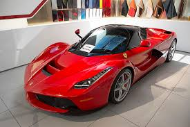
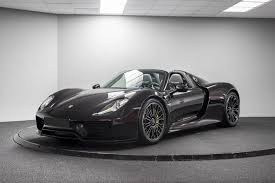
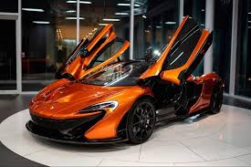
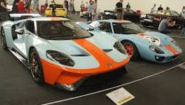
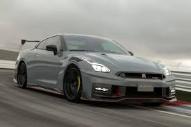
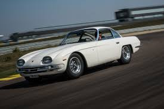
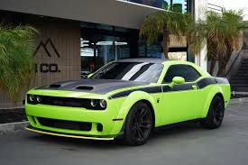
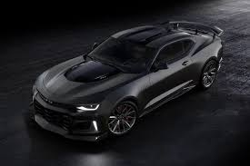

Montado na traseira da LaFerrari há um motor V12 de combustão interna com 6,3 litros, capaz de produzir 800 PS 9.000 rpm, que irá fornecer rajadas de energia extra.

O Porsche 911 é um carro desportivo com motor boxer, tração traseira e suspensão independente. A silhueta icónica do 911 é caracterizada pela sua flyline.

O McLaren P1 é um supercarro híbrido da fabricante britânica McLaren Automotive. É considerado o sucessor do McLaren F1.

O Ford GT é um superesportivo americano com motor central e tração traseira. O design do Ford GT é inspirado no Ford GT40, que venceu as 24 Horas de Le Mans de 1966.

O Nissan GT-R R35 tem um motor V6 biturbo de 3,8 litros, chamado VR38DETT. Um motor de 600 cavalos ajustado com paixão.

Com o peso de 1230 kg (2712 lbs), o 350 GT pode acelerar de 0 a 100 km/h em 5,5 segundo e ir pode atingir uma velocidade máxima de 257 km/h (160 m/h).

O Dodge Challenger SRT Hellcat Jailbreak é um muscle car com motor V8 6.2 litros e supercharger. Ele é potente, com 717 cavalos de potência e 90,69 kgfm de torque. O carro acelera de 0 a 100 km/h em 3,6 segundos.

O Camaro Collection conta com o melhor motor V8 já produzido pela Chevrolet. Além da transmissão de 10 velocidades, são 461 CV de potência, capazes de acelerar de 0 a 100 km/h em 4,2 segundos.